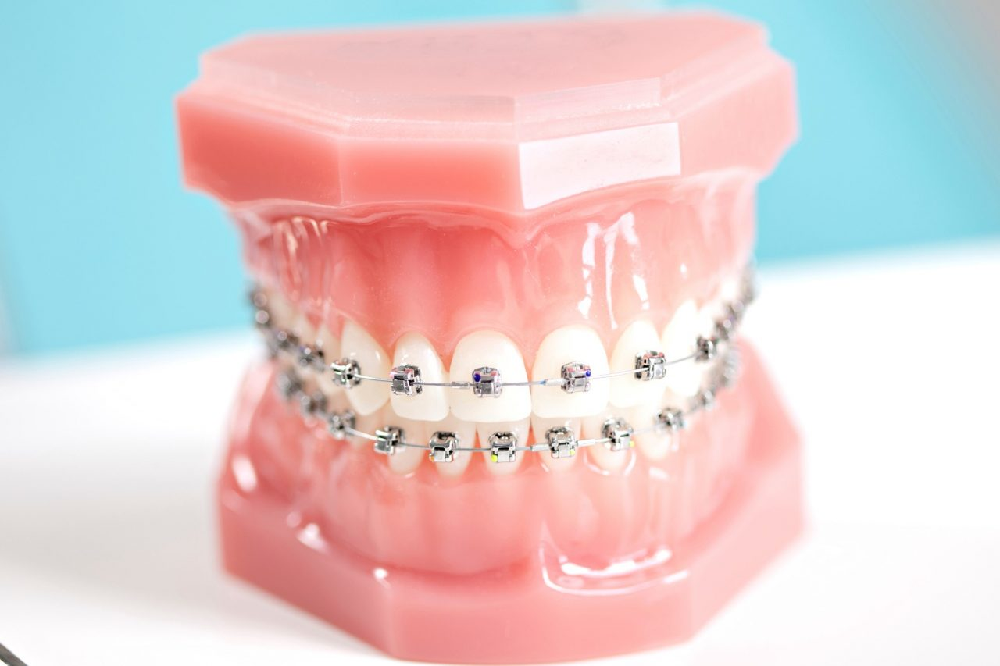

Ortodontia é uma especialidade odontológica que corrige a posição dos dentes e dos ossos maxilares posicionados de forma inadequada. Dentes tortos ou dentes que não se encaixam corretamente são difíceis de serem mantidos limpos, podendo ser perdidos precocemente, devido à deterioração e à doença periodontal. Também causam um estresse adicional aos músculos de mastigação que pode levar a dores de cabeça, síndrome da ATM e dores na região do pescoço, dos ombros e das costas. Os dentes tortos ou mal posicionados também prejudicam a sua aparência. O tratamento ortodôntico torna a boca mais saudável, proporciona uma aparência mais agradável e dentes com possibilidade de durar a vida toda.
Como saber se preciso de um ortodontista?
Com base em alguns instrumentos de diagnóstico que incluem um histórico médico e dentário completo, um exame clínico, moldes de gesso de seus dentes e fotografias e radiografias especiais, nós iremos decidir se a ortodontia é recomendável e desenvolver um plano de tratamento adequado para você.
Se você apresenta algum dos problemas abaixo, pode ser um candidato para o tratamento ortodôntico:
Sobremordida, algumas vezes chamada de "dentes salientes" — este problema é caracterizado por um excesso vertical da região anterior da maxila e/ou uma sobre-erupção dos dentes dessa região. Nos casos de sobremordida, os dentes anteriores superiores recobrem quase 100% dos dentes inferiores, conferindo um sorriso desagradável e problemas mastigatórios. Os dentes inferiores podem, inclusive, estar tocando no palato e na gengiva do arco superior.
Mordida cruzada anterior — uma aparência de "bulldog", quando a arcada inferior está projetada muito à frente ou a arcada superior se posiciona muito atrás.
Mordida cruzada — ocorre quando a arcada superior não fica ligeiramente à frente da arcada inferior ao morder normalmente.
Mordida aberta — espaço entre as superfícies de mordida dos dentes anteriores e/ou laterais quando os dentes posteriores se juntam.
Desvio de linha mediana — ocorre quando o centro da arcada superior não está alinhado com o centro da arcada inferior.
Diastema — falhas ou espaços entre os dentes, como resultado de dentes ausentes ou dentes que não preenchem a boca.
Apinhamento — ocorre quando existem dentes demais para se acomodarem na arcada dentária pequena.
Como funciona um tratamento ortodôntico eficaz?
Diversos tipos de aparelhos, tanto fixos como móveis, são utilizados para ajudar a movimentar os dentes, retrair os músculos e alterar o crescimento mandibular. Estes aparelhos funcionam colocando uma leve pressão nos dentes e ossos maxilares. A gravidade do seu problema é que irá determinar qual o procedimento ortodôntico mais adequado e mais eficaz.
